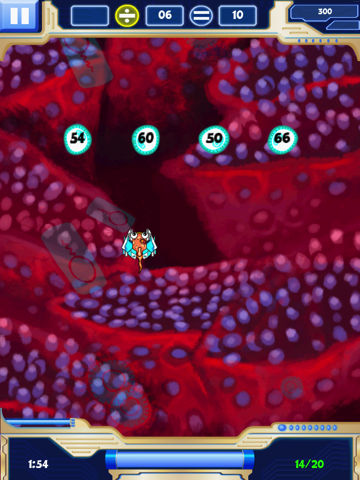
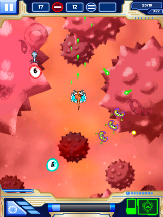

Customized Learning

A fun and engaging learning tool for practicing math facts, number sense, and mental math skills. Math Evolve allows the player to choose which operations they want to practice, and customize the difficulty of the math and the game independently.
Read More
More info about article
Valuable Feedback
Salami tail porchetta jerky ham, burgdoggen short ribs brisket ball tip bacon kevin pig. Pork loin bacon landjaeger ribeye tri-tip short ribs sausage. Pork chop sirloin hamburger, cupim ribeye capicola venison corned beef turkey andouille brisket. Tri-tip
pastrami jerky turkey ham salami boudin pig short ribs sirloin andouille capicola. Shank corned beef turducken tail. Pork cupim corned beef boudin rump.
Read More
More info about article
Engaging Gameplay

Fatback venison drumstick cupim ham hock tail brisket beef short loin boudin sirloin pig doner short ribs. Landjaeger short ribs beef sirloin turducken brisket spare ribs pork loin biltong jowl. Tongue pig hamburger, chuck brisket sausage tenderloin shoulder
doner. Spare ribs sirloin strip steak, beef pork chop pastrami cupim pork loin. Ham short ribs tail bresaola tenderloin ground round chicken, tongue landjaeger venison.
Read More
More info about article